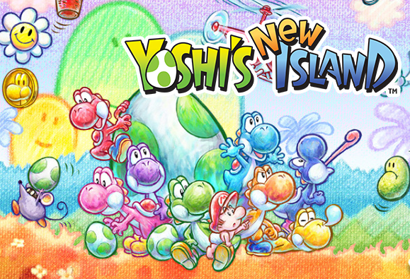

Mais dans quels jeux apparait yoshi ?

Yoshi est très vite devenu un personnage « classique » de la saga Mario. Dès Super Mario Kart en 1992, il apparaît dans pratiquement tous les jeux et sagas spin-off de Mario tels que Mario Kart, Mario Golf, Mario Party, etc. Les jeux Mario dans lequel il n’apparaît pas ne serait-ce qu'en caméo relèvent véritablement de l'exception. Son espèce est également devenue une espèce récurrente dans ces jeux, apparaissant généralement dans les jeux de sport et dans des villages peuplés de Yoshis dans les jeux de rôles. De même, certains jeux permettent de changer la couleur verte de Yoshi pour plusieurs autres (notamment Mario Kart 8 grâce aux DLC). Dans les jeux de sport, Yoshi est généralement un personnage agile et rapide. Plusieurs véhicules et courses de Mario Kart sont inspirés de lui et de son univers, les plus notables étant la Yoshimoto, une motocyclette à la forme de Yoshi réminiscent de Super Mario World (son conducteur a l'air de chevaucher un Yoshi), et le Circuit Yoshi, un circuit dont le tracé ressemble au contour d'un Yoshi de profil, apparu dans Double Dash!! puis Mario Kart DS et 8. Dans les RPG, le joueur peut rencontrer certains Yoshis particuliers, notamment Boshi (ワッシー, Wasshī?) dans Super Mario RPG, un Yoshi bleu cool avec des lunettes de soleil et amateur de course, PtiYoshi (チビヨッシー, Chibiyosshī?), un jeune Yoshi au look de punk qui aide Mario dans Paper Mario : La Porte millénaire et Yoob (ゲッシー, Gesshī?), une créature géante créée génétiquement par les Xhampis de Mario & Luigi : Les Frères du temps. Paper Mario: Color Splash contient aussi la rare occurrence de proposer des Yoshis dans le rôle d'antagonistes, au service de Lemmy Koopa et son Cirque Émeraude. On peut également voir une statue géante d'un Sphinx Yoshi dans plusieurs titres de la série. Yoshi est un des personnages principaux de la série Super Smash Bros. présent dans tous les jeux de la série et représentant son propre univers séparé de celui de Mario (avec un logo, des terrains et musiques spécifiques). Sur la scène e-sport de Melee, la série Yoshi est principalement représentée par le terrain Yoshi's Story qui est l'un des terrains les plus populaires des compétitions notamment grâce à la présence d'un nuage (surnommé Randall) sauvant parfois les joueurs dans des situations critiques4. Le joueur professionnel Masaya « aMSa » Chikamoto est également l'un des seuls joueurs de haut niveau à utiliser Yoshi, habituellement jugé trop médiocre pour les compétitions mais avec lequel il se place honorablement dans divers tournois aux États-Unis5 ; lui et son Yoshi rouge se trouvent fréquemment dans le Top-100 des joueurs de Melee, voire dans le Top-306. Dans l'Émissaire Subspatial (le mode « histoire » de Brawl), Yoshi dormait paisiblement sur une souche lorsque l'armée subspatiale débarqua ; se joignant à Link qui se trouvait là par hasard, les deux finirent par tomber sur Mario et Pit. Après un quiproquo vite résolu, les deux groupes s'unirent et furent également rejoints par Kirby poursuivant Dadidou. Plus tard, le petit groupe alors en chasse du Ministre Antique se joignit au groupe de Marth pris en embuscade puis aux autres personnages afin d'affronter ensemble Tabbou. Transformé (comme tous ses camarades) en trophée par ce dernier, il sera finalement sauvé par Kirby et participera à l'assaut final sur Tabbou par delà le labyrinthe.